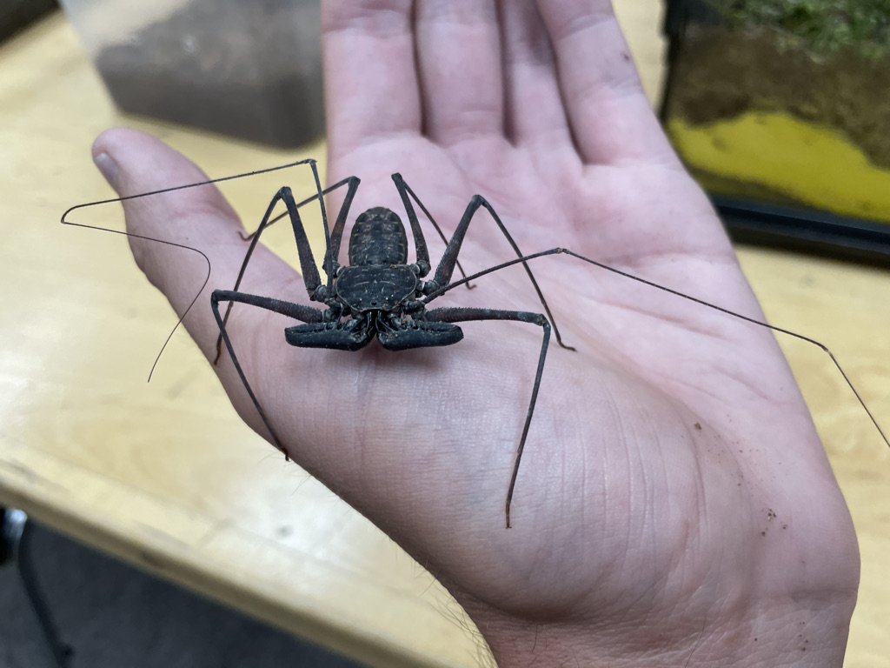

Types of Arachnids
Spiders and Scorpions
Spiders are a diverse and fascinating group of arachnids known for their silk-spinning abilities and predatory nature. With over 48,000 species described to date, spiders can be found on nearly every continent, demonstrating their remarkable adaptability to various environments. These remarkable arachnids employ silk for a multitude of purposes, from constructing intricate webs to capture prey, to creating protective retreats, and even for dispersal through ballooning. Spiders are efficient hunters, typically using venomous fangs to subdue their prey, which can range from insects to other spiders. Most spiders have eight eyes, though some only six or four. However, most can't see well and rely on other senses such as touch. Well-known spider groups include the Theraphosidae (Tarantulas), Salticidae (Jumping spiders), and Araneidae (Orb Weavers).
Scorpions are ancient arachnids that have captivated human interest for centuries with their distinctive appearance and enigmatic behaviors. These creatures are characterized by their elongated bodies, segmented tails, and formidable pincers, which house venomous stingers that they use for capturing prey and defending against predators. Scorpions are found in a wide range of habitats, from deserts to tropical forests, and have adapted to various environmental conditions over their long evolutionary history, which dates back over 400 million years. In fact, one of the oldest known arachnid fossils is of a scorpion. They are known for their ability to fluoresce under ultraviolet light, a feature that has sparked curiosity and led to numerous scientific studies. With around 2,500 recognized species, scorpions continue to be subjects of research in fields like ecology and venom biology.
Other Arachnids
- Amblypygi, otherwise known as Whip Spiders or Whip Scorpions, have heavily specialized pedipalps that resemble arms. Only six of their legs are used for walking, with on pair having evolved into feelers similar to insectoid antennae. They don't have venom or silk glands, making them a good beginner's pet.
- Ixodida, or ticks, are small arachnids that have fused body segments and beak-like mouthparts. They are parasitic organisms, latching onto host organisms and feeding on their blood.
- Solifugae, or camel spiders, are known for their large chelicerae that form pincers on their heads. Despite what numerous urban legends say, they can't cause any damage to humans larger than a small bite.
- Opiliones, or the harvestmen, often have long legs and a small body. Despite resembling spiders, they don't have vemon and don't produce silk.